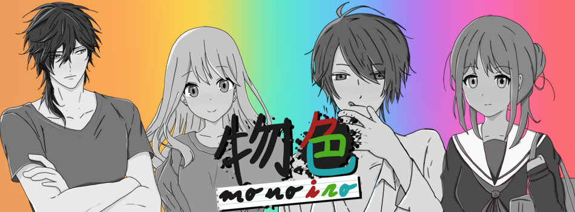

Monoiro Game
- 


Yoru No Koe
¡Hola a todos! Somos Yoru No Koe Studio, un grupo de 4 estudiantes de diseño y desarrollo de videojuegos de la URJC empezando a forjar nuestros sueños. Nos conocemos solo de este año, pero entre los cuatro hemos logrado crear la experiencia de Monoiro.
¿Quiénes son Yoru No Koe?
Marta "Taiyou" Rodríguez Castillo:
Arte, Video, Tipografía.
Graphic design is my passion.
Javier Picado Hijón "Arael":
Programación, arte.
Amante de la música y diseñador en proceso.
Pablo Álvarez de Lara Fernández:
Programación, audio.
Aspirante a concept artist y productor musical.
Victoria "Vic" Iglesias Hurtado:
Arte, audio.
Ambición por dibujar y comer croquetas.
¿Quieres saber más sobre nosotros o sobre el juego? ¡Déjanos tu comentario!